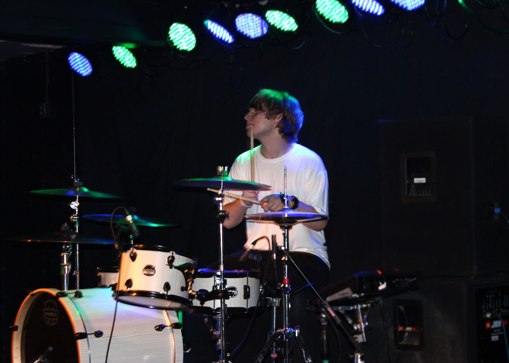

Jake is the bass player and sings backup vocals for the band. Jake has been playing live shows wih bandmate Tyler Hodgett since the age of thirteen. Jake loves the live show and meeting new people at their shows. He is known for full sending on stage. His favorite band is Cage the Elephant.

Kieran Shoaf
Kieran is the drummer of New Age Americans, and likes to dabble in guitar at times. He has been playing drums since he was 9 years old, and didn't join the band until he was 15. Kieran loves to play live shows and write music. On his time off he likes to practice his instrument and work on his car. Kieran's greatest influences in the music industry are Avenged Sevenfold and Paramore.
Tyler Hodgett
Tyler is the lead guitarist and vocals for NAA. He's been playing live shows since he was 14. Tyler loves being in the studio and late nights writing music. His biggest influences include Weezer, the Killers and Jimi Hendrix.
Liam Poe
Liam is the rhythm guitarist for New Age Americans. He learned guitar a little over a year ago, and joined the band for his first live show in November 2017. During his short stint with the band, Liam enjoys simply playing music regardless of the stage or songs. He draws his mannerisms and is inspired the most by Arctic Monkeys and Cage the Elephant.